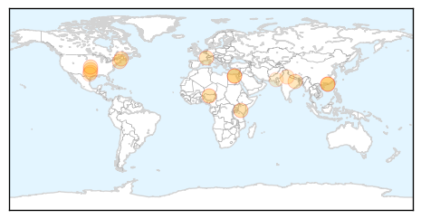
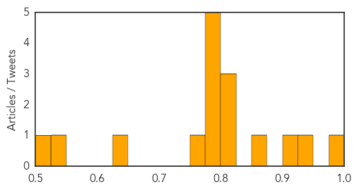
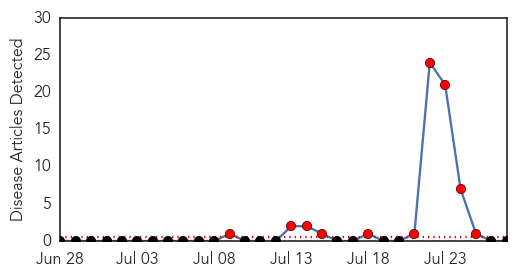

Hepatitis
30-Day Web Trend
5 alerts, 0 warnings

30-Day Twitter Trend
0 alerts, 0 warnings

Article Locations
Article Confidences
Top Articles:
- 1.000
- As Ebola, Mers and HIV/Aids make headlines, what are the biggest risks to the world's health? And what is being done about them?
- 0.943
- Beware of Hepatitis, the ‘silent epidemic’ more deadly than HIV
- 0.900
- China urged to step up protection against hepatitis
- 0.868
- Stay safe with a jab, travelers told
- 0.821
- Local Doctors Push People to get Tested for Hepatitis C
- 0.821
- Hepatitis E found in donor blood; call for EU screening
- 0.806
- Elimination of Chronic Hepatitis Feasible
- 0.786
- Elimination of Chronic Hepatitis Feasible
- 0.786
- Elimination of Chronic Hepatitis Feasible
- 0.786
- Elimination of Chronic Hepatitis Feasible
- 0.786
- Elimination of Chronic Hepatitis Feasible
- 0.786
- Elimination of Chronic Hepatitis Feasible
- 0.766
- 17 lakh Hepatitis C patients in Bihar
- 0.630
- Lack of blood screening causing Hepatitis C (July 28 is World Hepatitis Day)
- 0.544
- Commentary: Expensive hepatitis C cure creates dilemma for doctors
- 0.522
- Walk to create awareness of hepatitis held
Top Tweets:
-
No tweets found for Jul 27, 2014
Bubonic Plague
30-Day Web Trend
10 alerts, 0 warnings

30-Day Twitter Trend
0 alerts, 0 warnings

Article Locations

Article Confidences

Top Articles:
-
No articles found for Jul 27, 2014
Top Tweets:
-
No tweets found for Jul 27, 2014